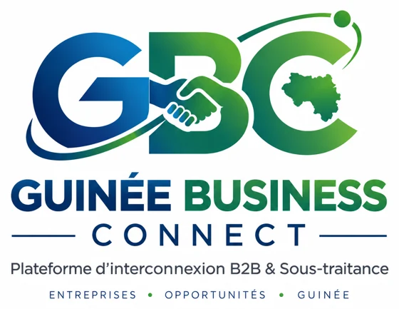

Guinée Business Connect
« Trouvez les bons partenaires pour vos projets. »
Développée par Silamana Business Model AGENCY, Guinée Business Connect (GBC) est une plateforme numérique d'interconnexion B2B et de sous-traitance qui met en relation les PME/prestataires guinéens avec les donneurs d'ordre à la recherche de partenaires fiables — sous le contrôle et la vérification de l'équipe GBC.
La Chambre de Diplomatie Économique de Guinée (CDEG) a publié un besoin de transformation digitale. Deux PME ont candidaté en ligne — sans jamais voir les informations ni le dossier l'une de l'autre. Le donneur d'ordre, lui, consulte les candidatures reçues pour sélectionner son prestataire : un parcours métier complet, de bout en bout.
Comprendre Guinée Business Connect
GBC est bien plus qu'un annuaire : elle réunit la visibilité des entreprises et les opportunités d'affaires, avec un processus de vérification et une confidentialité des candidatures. Voici l'essentiel — le document PDF détaille tout le fonctionnement.
Les 4 niveaux de vérification
Créer un compte ne signifie pas être vérifié : une entreprise ne peut pas s'attribuer elle-même un statut.
Le parcours en 5 étapes
Les donneurs d'ordre publient leurs besoins ; les entreprises concernées les découvrent sans attendre d'être contactées, puis candidatent depuis leur espace entreprise lorsqu'elles remplissent les conditions. Chaque PME suit sa propre candidature.
Oui. Les informations publiques servent à présenter l'entreprise ; les documents de vérification (RCCM, NIF…) ne sont pas affichés publiquement. Une PME ne voit ni le nom, ni le message, ni les documents, ni le statut des autres candidates au même besoin.
BTP et construction, génie civil, logistique et transport, numérique et IT, formation, communication et graphisme, restauration, import-export, sécurité, nettoyage industriel, et d'autres activités professionnelles.
GBC est en phase de développement et évolue avec les besoins réels des entreprises. Les retours des premiers utilisateurs sont particulièrement importants : testez la plateforme et partagez vos observations.
Accédez à GBC, créez votre compte, sélectionnez « PME / Prestataire », complétez votre profil, présentez vos services, références et capacités, puis découvrez les opportunités et partagez vos retours.
Une question sur GBC ? direction@silamana.com · formulaire de contact